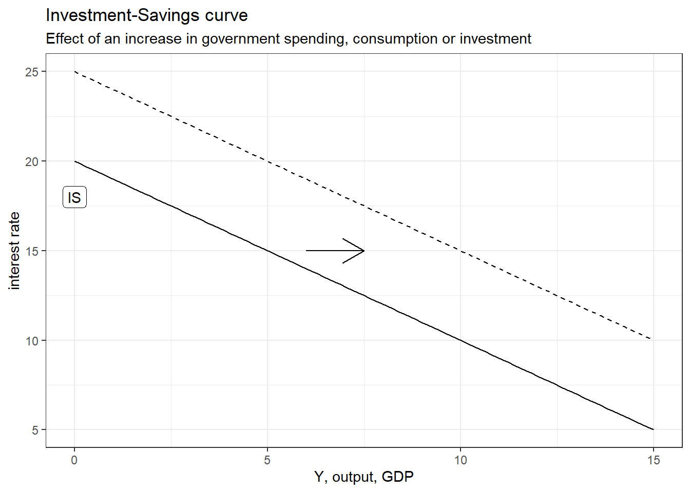
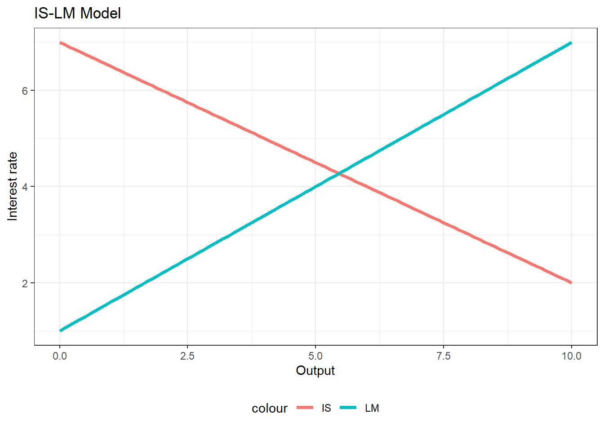

#example of a linear IS function
IS <- function(A, k, x) A - k*x #with A autonomous spending, k the mutliplier and x the interest rate4 IS-LM model
4.1 Intro
The main objective of macroeconomics is to describe and explain the relationship between important economic variables such as unemployment, inflation, production and growth or the interest rate. Questions macroeconomics typically tries to answer are “how can long run growth be sustained?” “how can unemployment be reduced?”. Macroeconomics also takes into account economic policy and the role of the government: how can the government reduce unemployment, increase output and maintain low level of inflation?
Those are all questions most of macro models try to answer. In this chapter, I will explain one of the most famous and widespread macro model, which is the Investment-Savings - Liquidity-Money model (IS-LM model), as it is explained in one of the most famous macro textbook: Blanchard (2020).
The is-lm model was originally developed by John Hicks, a British economist who tried to mix neoclassical ideas (mainstream economic theory) with Keynesianism, which constituted a revolution within the discipline at his time. Neoclassical macroeconomics was mainly founded by this economist after he merged Keynes with neoclassical theory. Critics of his work would say that Hicks rather incorporated all Keynes’ insights which were compatible with neoclassical theory while disregarding else.
Keep in mind that is-lm model is a short-run model, which results from the equilibrium in the goods and services market and in the money supply and demand market. To go to the medium-run, the is-lm model is then combined with a model describing the equilibrium on the labor market. For the long-run, neoclassical macroeconomics is based on the famous Solow growth model and its infinite extensions.
4.2 Production as Gross National Product (GDP)
The is-lm model can essentially be summarized in a graph, showing the relationship between output and the interest rate. But first, we have to define what is actually output (production) in macro theory.
4.2.1 The three approach to GDP
In economics, Production is defined as the sum of value added within an economy (can be a nation, a region, or the world taken as a whole) during a period of time (a year, month, semester, quarter…).
There are three equivalent ways to define and compute GDP:
Production approach
GDP is equal to the value (measured in price) of all final goods and services sold minus the value of all intermediary inputs used in the production process
\(GDP \equiv value\: output\: sold - cost\: intermediary\: inputs\)
Income approach
GDP is equal to the income of all agents in the economy
\(GDP \equiv salaries\:of\:workers + profits\:of\:capital\:owners\)
Expenditure approach
Finally, and this is the most famous definition of GDP, GDP is equal to the total expenditure in the economy, which can be decomposed into the private expenditures of housholds on goods and services C, private expenditure of firms, investment I, and public expenditure G.
\(GDP \equiv C + I + G\)
If we take into account the fact that the economy is trading with the rest of the world, we must include the expenditure on imported goods M (imports) and expenditure from the rest of the world for national goods and services X (exports).
\(GDP \equiv C + I + G + (X-I)\)
Those three approaches are equivalent. Take for example the income and expenditure methods: it makes sense that any expenditure someone makes has to be a revenue for someone else.
4.2.2 Investment-savings curve (IS)
The objective of the IS curve is to describe the relationship between the interest rate and output, which is determined by demand in the short run.
The first step is to model demand and the equilibrium on the goods and services market. This can be done from the expenditure method to GDP, since expenditure is kind of the same way to say demand.
The total demand in a (closed) economy is thus
\(Y \equiv GDP \equiv C + I + G\)
4.2.2.1 Consumption C
But what determines private consumption C? IS-LM model considers that consumption as a positive function of income \(Y\)
\(C = C_{0}+C_{1}Y\)
With \(C_{0}\) the minimum level of consumption if income is zero, \(C_{1}\) the marginal propsentity to consume (the additional consumption resulting from one-unit increase in income Y) and \(Y\) the income. Note that income \(Y\) is the disposable income, that is, income after tax T: \(Y_d = Y-T\). Taxes T can be written as a proportion taken from income \(T = tY\) with \(t\) the tax rate on income.
The consumption function can thus be rewritten:
\[ \begin{aligned} C = C_{0}+C_{1}Y \\ C = C_{0} + C_{1}(Y-tY) \\ C = C_{0} + C_{1}Y(1-t) \end{aligned} \]
4.2.2.2 Investment I
Regarding investment, the latter is considered as a decreasing function of the interest rate i:
\(I = I_{0} -iI_{1}\)
The logic behind a negative relationship between investment and the interest rate is the following: the interest rate is the cost of borrowing. The higher the i, the higher it is to finance investment through borrowing. Conversely, at low i borrowing is cheaper, making firms more likely to borrow in order to invest.
4.2.2.3 Public spending G
Government spending is considered as exogenous in the is-lm model. This means that G is determined by government decisions which is determined outside the model.
4.2.2.4 Final output equation
The formula \(Y \equiv GDP \equiv C + I + G\) can thus take its final IS form:
\(Y = [C_{0} + C_{1}Y(1-t)] + [I_{0} - iI_{1}] + \bar{G}\)
We can see in this equation that ouput Y is negatively related to the interest rate i: the IS curve as thus a negative linear shape.
To grasp the function in an easier way, we will just consider that the IS curve is a linear function of consumption (positive relation between output and consumption), Investment and government spending (also positive relation) and the interest rate (negative relation):
\(IS = Y = F[C(Y_{+}, T_{-}), I(i_{-}), G_{+}]\)
Keep in mind that the IS curve represents all the combinations of output and interest rate at which there is an equilibrium between demand for goods and services and output/production. We thus say that \(IS = Y^d=Y\)

As shown in the graph above, an increase in government spending or in consumption (but not due to an increase in income) or in investment (except due to a decline in interest rate) will induce a positive shift (upward) of the IS curve. A negative shock will make a shift downwards (negative shock).
4.2.3 The Liquidity-Mondey (LM) Curve
The next step is to derive the lm curve, which represents all combinations of interest rate and output for which there is an equilibrium between the demand and supply of money.
4.2.3.1 Supply of money
The supply of money is considered as exogenous, because controlled directly by the central bank through open-market operations. The central bank can increase the supply of money by:
- Buying bonds or financial assets in general, because the central bank create money to buy these financial asset and thus inject more money in the economy, thus increasing the money supply.
The central bank can reduce the money supply by:
- Selling bonds or financial assets. By doing so the central bank receive money which will be withdrawn from circulation, thus decreasing the money supply.
4.2.3.2 Demand for money
The demand for money is described through the following function:
\[M^d=P_+Y_+L(i_-)\] With \(P\) the price level, \(Y\) output and \(L(i_-)\) a non-specified function stating that demand for money is negatively related with the interest rate. The plus and minus sign show the effects of the variables on the demand for money. The latter increases with \(P\), because the higher the price level, the more people need money to settle transaction. It also increases with output \(Y\), because the more goods and services there is in an economy, the more people also need money to transact.
It is very important to understand why the interest rate has a negative impact on money demand. The higher the interest rate, the less people will want to hold money because bonds and financial assets become more attractive since the interest rate is higher. As the interest rate increases, there is more incentive to buy financial assets and thus less incentive to hold money.
4.2.3.3 Equilibrium between money demand and supply
The lm curve represents all combinations of interest rate and output for which there is an equilibrium in the money market. The lm curve, if the central bank has not target interest rate, will be positive: as output \(Y\) increases, the interest rate will increase. The logic behind this positive relationship is that when output increases (decreases), people need more money to transact, so they will supply bonds and financial assets to get money. This increases the supply of bonds and financial assets in their respective market, and thus reduces their price, which will have the effect to increase the interest rate1.
Conversely, when output \(Y\) falls, people need less money to transact: they hold excess money that they don’t need. As a consequence, they will try to buy bonds or financial assets. Demand for bonds and financial assets rise, their price increases and thus the interest rate declines. Hence the positive association between interest rate and output (but with the causality running from output to interest rate).
4.2.4 IS-LM equilibrium and exogenous shifts
The equilibrium levels of output and interest rate are the found at the intersection of the IS and LM curves.

This model allows to imagine multiple scenarios: the government can for example start spending more and the IS curve will shift to the right. It can also raise taxes, and make the IS curve shift to the left. The central bank can for example increase the money supply and make the LM curve shift down to the right. There are a large set of possibilities, but economists often focus only on two types of shocks: fiscal/budgetary policy and monetary policy
4.2.4.1 Fiscal and budgetary policy
Fiscal and budgetary policy refer to government policy regarding public spending and taxes. Any government can either raise or reduce taxes and raise or reduce public spending.
An increase in public spending would make the IS curve shift to the right. The IS-LM model would predict an increase in the equilibrium values of interest rate and output. Along with tax reduction, these types of budgetary policies are called expansionary policies.
A decrease in public spending or increase in taxes would make the IS curve shift upward to the left, meaning a negative impact on demand. Those policies, also called austerity measures/policies have a negative impact on equilibrium interest rate and output.
4.2.4.2 Monetary policy
Regarding monetary policy, the central bank can either:
Increase the interest rate through a reduction of the money supply, which would make the lm curve shift upward to the left. This restrictive monetary policy would have a negative impact on output.
Decrease the interest through an increase in the money supple, which would male the lm curve shift down to the right. This expansionary monetary policy would have a positive impact on output.
4.3 Conclusion
We have thus seen how neoclassical macroeconomists derived the is and lm curves and how they make predictions regarding government and central bank policies on the equilibrium levels of interest rate and output. Expansionary policies such as reducing the interest rate, rising public spending or decreasing taxes have positive impact on growth
However, it is important to keep in mind that the is-lm model is a short-run model and that an important assumption of the model is that prices are considered as fixed, or at least sticky: they do not adjust directly in the short run. Once we relax this assumption and introduce labor market equilibrium, expansionary policies do nothing but increase inflation in the medium-run.
There is always a negative relationship between the price of a bond and its interest rate. The interest rate of a bond is written as \(i=\frac{coupon}{P}\) with coupon the periodic fixed revenue promised by the bond.↩︎